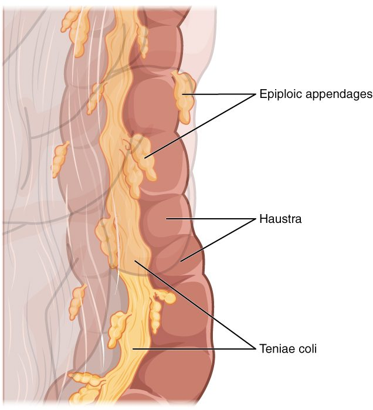

By the time chyme reaches your large intestine, almost all the nutrients have been absorbed. What arrives is a watery mix of fiber, bile pigments, shed cells and salts. This page covers the large intestine's anatomy and functions: its regions from the cecum to the anal canal, the bands and pouches that give the colon its shape, the trillions of bacteria that live there, how the colon absorbs the last of the water, how the defecation reflex works, and what goes wrong in diarrhea and constipation.
What reaches the large intestine
Each day about 1.5 L of fluid passes through the ileocecal valve from the ileum into your large intestine. It carries plant fiber you could not digest, a little undigested starch and protein, bile pigments, mucus, cells shed from the lining, sodium, potassium and water. Within one to three days, this becomes about 100 to 200 g of feces, three quarters of it water.
Three things happen along the way, and each gets a section below: bacteria ferment what your own enzymes could not digest; the lining absorbs most of the remaining water and salt; and the wall moves the contents slowly along, then empties them in bursts.
Regions of the large intestine
The large intestine is about 1.5 m long and 6 to 7 cm wide, wider than the small intestine but much shorter. It frames the coils of the small intestine on three sides (Figure 1).
![A front view of the large intestine framing the faded coils of the small intestine. A yellow-green pouch in the lower right receives the end of the small intestine, with a small worm-like tube hanging below it. From there a gray-green, puckered tube rises up the right side, bends sharply under where the liver would be, crosses the abdomen, bends down again higher on the left, descends the left side and makes an S-shaped loop in the pelvis. It joins a purple straight segment that ends in a short canal at the bottom.](../figures/os-23-21.jpg)
- Cecum (caecus = blind). A blind-ended pouch in the lower right of the abdomen, below the ileocecal valve. The appendix, a narrow tube of lymphoid tissue about 8 cm long, hangs from it.
- Colon (Greek kolon). The longest part, in four sections:
- The ascending colon rises up the right side of the abdomen to the underside of the liver. There it bends sharply at the right colic flexure (colic = of the colon, flexure = bend; also called the hepatic flexure).
- The transverse colon crosses the abdomen from right to left, below the stomach. It bends down at the left colic flexure (the splenic flexure), near the spleen, which sits a little higher than the right one.
- The descending colon runs down the left side.
- The sigmoid colon (sigm- = the Greek letter S, -oid = like) is an S-shaped loop in the pelvis.
- Rectum (rectus = straight). About 12 to 15 cm long, in front of the sacrum. Despite its name it follows the curve of the sacrum. Inside, three shelf-like rectal valves (transverse folds of the wall) hold feces up while gas passes.
- Anal canal. The last 3 to 4 cm, passing through the pelvic floor to the anus. Its lining forms vertical ridges, the anal columns. Two sphincters surround it: the internal anal sphincter, a thickening of the circular smooth muscle, which you do not control; and the external anal sphincter, skeletal muscle, which you do.
You met the peritoneum in the overview. The ascending and descending colon are retroperitoneal: pressed against the back wall of the abdomen and covered by peritoneum only in front. The transverse and sigmoid colon hang from mesenteries of their own, so they move more freely.
The wall: teniae coli, haustra and epiploic appendages
Look at the colon from outside and it does not look like a smooth tube. It is puckered into a chain of pouches (Figure 2). Three features create that look:
- Teniae coli (taenia = ribbon, coli = of the colon; singular tenia coli). In most of the gut, the outer longitudinal layer of the muscularis externa is a continuous sheet. In the colon it is gathered into three narrow ribbons of smooth muscle that run from the cecum to the rectum.
- Haustra (singular haustrum; Latin for the buckets on a water wheel). The teniae coli are shorter than the colon wall and keep up steady tone, so they bunch the wall into a row of pouches, like a curtain gathered on a string.
- Epiploic appendages (epiploon = an old Greek name for the omentum). Small fat-filled tags of visceral peritoneum that hang from the outer surface.

In the rectum, the three teniae spread out into a continuous layer again, so the rectum has no haustra.
The lining
The mucosa of the large intestine has no circular folds and no villi. It is flat, lined by simple columnar epithelium with deep, straight intestinal glands. Goblet cells are far more common here than in the small intestine, and their mucus lubricates the drying contents and keeps bacteria away from the epithelial surface. In the anal canal, the lining changes to stratified squamous epithelium, which stands up better to friction.
| Small intestine | Large intestine | |
|---|---|---|
| Length and width | About 3 to 5 m in a living adult (about 6 m after death, when its muscle relaxes); about 2.5 cm wide | About 1.5 m; about 6 to 7 cm wide |
| Surface of the lining | Circular folds, villi and microvilli | No circular folds or villi; flat surface with deep glands |
| Goblet cells | Present | Very many |
| Outer longitudinal muscle | A continuous layer | Gathered into three teniae coli, which form haustra |
| Digestive enzymes | Brush border enzymes; receives pancreatic juice and bile | None of its own; bacteria do the breaking down |
| Bacteria | Relatively few, rising toward the ileum | Trillions; most of the gut's bacteria |
| Water absorbed per day | About 7 to 8 L | About 1.3 L, around 90% of what enters |
| Main movements | Segmentation after meals; migrating motor complex between meals | Slow haustral contractions; a few mass movements a day |
| Time contents spend there | About 3 to 5 hours | About 12 to 48 hours or longer |
Gut bacteria
Your colon holds the densest community of microbes in your body: roughly 40 trillion bacteria, several hundred species in any one person, weighing about 200 g. This community is your gut microbiota (micro- = small, bio- = life); older texts call it the normal flora or bacterial flora. The stomach's acid and the fast flow of the small intestine keep bacteria sparse higher up; in the slow, oxygen-poor, fiber-rich colon they thrive. A newborn picks up its first bacteria during and after birth, and the community settles into an adult pattern over the first few years.
What gut bacteria do
- Ferment fiber. You have no enzymes that break down most plant fiber. Colon bacteria do. They break these carbohydrates down without oxygen, which is saccharolytic fermentation (sacchar- = sugar, -lytic = breaking down). The products are short-chain fatty acids, mainly acetate, propionate and butyrate, and gases. The colon absorbs the fatty acids, and butyrate is the main fuel of the colon's own epithelial cells. On a typical diet, these fatty acids supply roughly 5 to 10% of your daily energy.
- Make gas. Fermentation releases hydrogen and carbon dioxide, and in some people methane. Swallowed air adds nitrogen. The gas that passes from the anus is flatus (Latin = a blowing); its smell comes from small amounts of sulfur compounds made when bacteria ferment protein.
- Change bile pigments and bile salts. You met this in the red blood cell life cycle: bacteria turn bilirubin into urobilinogen and then stercobilin, the brown pigment of feces. They also alter bile salts that escape reabsorption in the ileum.
- Make vitamins. Some gut bacteria make vitamin K and several other vitamins. How much of the colon's vitamin K you absorb is uncertain: it is made far from the ileum, where bile salts, which help absorb fat-soluble molecules, are mostly reabsorbed. Most of the vitamin K you use comes from food. Newborns are low in vitamin K mainly because little vitamin K reaches the fetus before birth and breast milk contains little, which is why newborns get a vitamin K injection.
- Crowd out harmful microbes. A settled community uses up space and nutrients that invading microbes would need. You met this as one of your innate barriers.
Keeping bacteria in their place
Trillions of bacteria live a fraction of a millimeter from your blood. Three layers of defense keep them there. A thick inner layer of goblet-cell mucus stays nearly free of bacteria. Plasma cells beneath the lining make IgA, which crosses the epithelium into the mucus and binds bacteria before they reach the cells. And lymphoid tissue in the gut wall, such as the Peyer's patches you met in the ileum, samples the contents and responds to any that break through.
Broad-spectrum antibiotics kill many normal bacteria along with the harmful ones. With the community thinned out, a resistant species such as Clostridioides difficile can overgrow and release toxins that inflame the colon and cause severe diarrhea.
Water absorption in the colon
Your small intestine absorbs most of the fluid that passes through it, about 7 to 8 L a day. The colon takes up most of what is left: of the roughly 1.4 to 1.5 L that enters it, it absorbs about 1.3 L, around 90%. Only 100 to 200 mL of water leaves in the feces.
The colon has no pump for water. It moves water by moving salt:
- Sodium channels in the apical membrane of the epithelial cells let sodium in, down its gradient.
- Sodium–potassium pumps in the basolateral membrane push sodium out into the interstitial fluid, keeping the sodium inside the cell low.
- Chloride follows sodium, partly by trading places with bicarbonate, which enters the lumen.
- With more solute outside the lumen, water follows by osmosis, through and between the cells.
Aldosterone, the adrenal hormone you met in the endocrine chapter, adds more sodium channels and pumps to colon cells, so the colon saves more sodium and water when your body is low on them. The colon also secretes potassium into the lumen, and aldosterone increases that too.
The colon can absorb up to about 4 to 5 L a day. Time matters as much as capacity: the longer contents stay in the colon, the more water is absorbed and the harder the stool.
How the colon moves its contents
Most of the time the colon moves slowly:
- Haustral contractions. A filled haustrum stretches, and its wall contracts, squeezing the contents into the next pouch. Each pouch contracts roughly every 30 minutes. These slow, mixing contractions press the contents against the lining, giving time for water absorption and fermentation.
- Mass movements. A few times a day, a strong wave of contraction sweeps along a long stretch of the colon, often from the transverse colon to the sigmoid, and pushes its contents on toward the rectum. The haustra flatten out while it passes.
Mass movements are most likely in the first hour after a meal, especially breakfast. Food stretching the stomach triggers the gastrocolic reflex, a long reflex through the enteric nervous system and autonomic nerves that increases colon motility. That is why many people feel the urge to defecate after eating.
The defecation reflex
Defecation (de- = away, faec- = dregs) is the emptying of the rectum. Its core is a visceral reflex, with a voluntary step on top:
- A mass movement pushes feces into the rectum, which is usually empty.
- The rectal wall stretches, and stretch-sensitive sensory receptors in it fire.
- Sensory neurons carry the signal to the sacral segments of the spinal cord (about S2 to S4), and on up to the brain, where you feel the urge.
- Parasympathetic neurons from the sacral cord make the smooth muscle of the rectum and sigmoid colon contract, and the internal anal sphincter relax. The enteric nervous system adds a weaker local version of the same reflex.
- Now the choice is yours. The external anal sphincter is skeletal muscle under voluntary control.
If you decide to go, you relax the external anal sphincter and the pelvic floor, and usually add a Valsalva's maneuver: you close the glottis and tighten the diaphragm and abdominal muscles, which raises the pressure inside the abdomen and pushes on the rectum. Feces pass out.
If you decide to wait, you tighten the external sphincter. The rectum slowly relaxes around its contents, the stretch signal fades, and the urge passes until the next mass movement. The feces stay in the rectum, where water is still being absorbed, so putting it off repeatedly leads to harder stools.
| Internal anal sphincter | External anal sphincter | |
|---|---|---|
| Muscle type | Smooth muscle (a thickening of the circular layer) | Skeletal muscle |
| Control | Involuntary | Voluntary |
| Nerves | Autonomic and enteric | Somatic motor neurons from the sacral spinal cord |
| At rest | Contracted: holds most of the resting closure | Contracted with low steady tone |
| When the rectum stretches | Relaxes by reflex | Stays closed until you decide to relax it |
| In a baby before toilet training | Relaxes by reflex | Not yet under learned control, so the reflex empties the rectum |
A spinal cord injury above the sacral segments cuts the pathway to and from the brain. The reflex still works, but the person no longer feels the urge or controls the external sphincter. Damage to the sacral cord itself removes the strong spinal reflex. Only the weak enteric reflex is left, so the rectum empties poorly and the external sphincter is slack.
Diarrhea and constipation
Both are problems of timing and of water. The colon's absorption of water depends on how much fluid arrives, how much solute stays in the lumen, and how long the contents spend there.
Diarrhea
Diarrhea (dia- = through, -rrhea = flow) is passing three or more loose or watery stools a day. The main mechanisms:
- Secretory. A toxin makes the intestinal lining secrete chloride into the lumen. Sodium and water follow. The cholera toxin does this in the small intestine, and the resulting fluid overwhelms the colon's capacity: a person with cholera can lose over 10 L a day.
- Osmotic. A solute that cannot be absorbed stays in the lumen and holds water there by osmosis. Magnesium laxatives and sugar alcohols such as sorbitol in "sugar-free" sweets work this way.
- Inflammatory. Infection or inflammatory bowel disease damages the lining, so it absorbs less and leaks fluid, mucus and sometimes blood.
- Fast transit. Contents rush through, with too little time for absorption.
Diarrhea loses more than water. Stool water carries sodium, potassium (which the colon secretes) and bicarbonate. Severe diarrhea therefore lowers blood volume, lowers blood potassium and makes the blood more acidic. Worldwide, it kills hundreds of thousands of young children each year, and most of those deaths are preventable with an oral rehydration solution of salt and sugar. Why the sugar matters is explained in the next topic, Chemical digestion and absorption.
Constipation
Constipation (con- = together, stipare = to pack) is passing hard stools infrequently, usually fewer than three a week, or with straining. Slow movement through the colon is the usual cause, and it makes itself worse: the longer feces stay, the more water is absorbed, and the harder and slower they get. Common causes include a low-fiber diet, too little fluid, ignoring the urge, inactivity, opioid pain drugs (which slow the enteric nervous system), an underactive thyroid, and pregnancy.
Fiber helps because it is not digested. It holds water in the stool, feeds the bacteria (whose own bodies add bulk), and makes a larger, softer mass that stretches the colon wall and sets off stronger contractions.
| Diarrhea | Constipation | |
|---|---|---|
| Stools | Three or more loose or watery a day | Hard, usually fewer than three a week, often with straining |
| Time in the colon | Usually shortened | Usually lengthened |
| Water absorbed by the colon | Less than arrives, or less than normal | More than normal |
| Common causes | Infection and toxins, unabsorbed solutes, inflammation | Low fiber and fluid, ignoring the urge, opioids, inactivity |
| Main danger | Loss of water, sodium, potassium and bicarbonate | Discomfort; rarely, a blockage of hard stool |